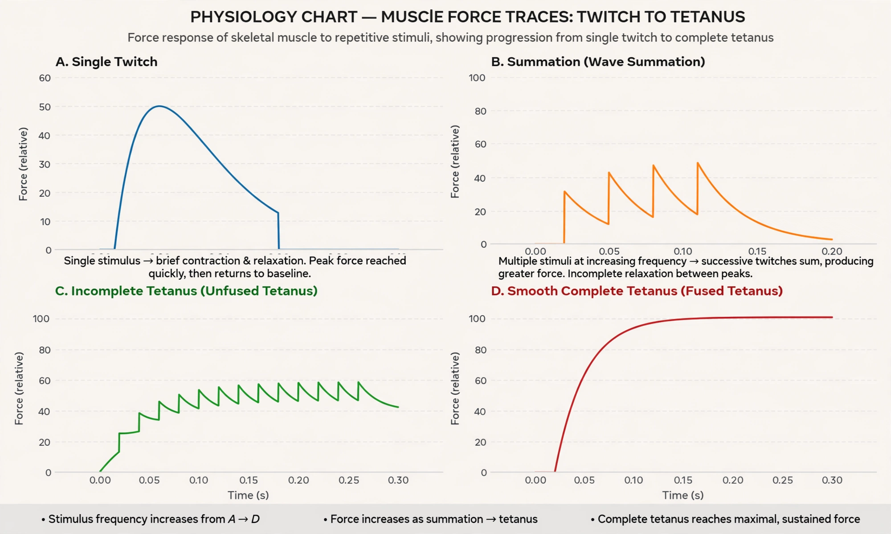

Tetanus (physiology)
| Tetanus (physiology) | |
|---|---|
 | |
| Synonyms | Tetanic contraction; tetanisation |
| Mechanism | Summation of muscle twitches at high stimulation frequency |
| Not to be confused with | The infectious disease tetanus (lockjaw) |
In physiology, a tetanic contraction (also called tetanised state, tetanus, or physiologic tetanus) is a sustained muscle contraction evoked when the motor nerve innervating a skeletal muscle emits action potentials at a very high rate. During this state, the motor unit is maximally activated and remains contracted without relaxation. It is distinct from the disease tetanus, in which a bacterial toxin causes uncontrolled spasms by blocking inhibitory neurotransmission.
Mechanism
A single action potential in a motor neuron — triggering release of acetylcholine at the neuromuscular junction — produces a brief muscle twitch: calcium is released from the sarcoplasmic reticulum, cross-bridges cycle once, and the fibre relaxes as calcium is pumped back. If a second stimulus arrives before relaxation is complete, the forces add together (wave summation). As stimulus frequency increases, relaxation between twitches progressively disappears:
- Incomplete (unfused) tetanus: the muscle partially relaxes between stimuli, producing a rippling plateau of force.
- Complete (fused) tetanus: at still higher frequencies no relaxation occurs at all and force reaches a smooth maximum, typically three to four times the force of a single twitch.
The physiological basis is calcium handling: with rapid stimulation, Ca²⁺ released via the T-tubules accumulates faster than SERCA pumps can remove it, so troponin stays saturated and tropomyosin remains displaced, keeping the maximum number of cross-bridges engaged.
Physiological significance
Motor neurons normally fire at rates that produce fused or partially fused tetanus in their motor units, so voluntary contractions are smooth rather than jerky. Force is graded by recruiting more motor units and by increasing firing rates (rate coding). Different muscles reach fusion at different frequencies — slow postural muscles fuse at low frequencies, while fast extraocular muscles require very high rates. Once in complete tetanus, further increases in frequency do not increase force.
History
The summation of contractions was studied in the 19th century with frog nerve–muscle preparations and induction coils; recordings of tetanic force were among the classic demonstrations of classical muscle physiology. The distinction between physiological tetanus and the pathological spasms of tetanus disease — caused by tetanospasmin from Clostridium tetani, which prevents release of inhibitory transmitters glycine and GABA in the spinal cord — is standard in physiology teaching.